Địa điểm ăn uống ngon & rẻ Nha Trang
Nhà hàng hải sản Bờ Kè - trải nghiệm thú vị khi đến Nha Trang
Nhà hàng hải sản Bờ Kè sở hữu một vị trí vô cùng thuận lợi trên con đường bờ kè Tháp Bà. Thưởng thức hải sản tại đây, bạn sẽ được chiêm ngưỡng 2 cây cầu nổi tiếng Nha Trang là cầu Xóm Bóng và cầu Trần Phú. Hơn thế, đưa mắt ra xa một chút, các bạn sẽ được ngắm nhìn Tháp Bà Ponagar xinh đẹp.
Đặc biệt, khi đến nhà hàng này, các du khách vừa được thưởng thức đồ ăn lại vừa có thể đắm mình trong cảnh biển Nha Trang xinh đẹp và tận hưởng những làn gió biển mát lành mang theo chút vị mặn của biển cả.
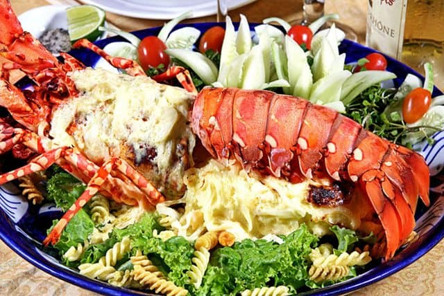 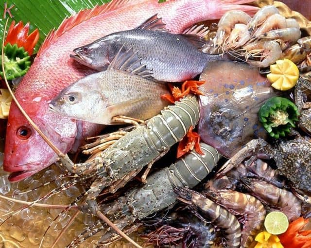Hải sản Bờ Kè là một trong những địa điểm ăn uống Nha Trang thật tuyệt vời cho những ai đến đây bởi bạn sẽ được thư giãn, thưởng thức đồ ăn lại vừa được ngắm nhìn thành phố biển xinh đẹp lúc lên đèn.
Với nguồn hải sản phong phú, quán hải sản Bờ Kè hứa hẹn sẽ mang đến cho bạn một thực đơn phong phú với cá mú hấp La-gim, cua rang me, tôm hùm chiên sốt bơ tỏi… Đây sẽ là một trong những quán ăn ngon Nha Trang nhất định bạn phải thử khi đến thành phố biển xinh đẹp này.
Thơm ngon nem nướng Ninh Hòa Vũ Thành An
Đặc sản nem nướng Ninh Hòa của tỉnh Khánh Hòa đã nổi tiếng khắp miền, nên không lấy gì làm lạ khi món ngon này lại có mặt giữa phố biển Nha Trang. Nem Ninh Hòa có hai loại là nem nướng và nem chua, nhưng thường nem nướng sẽ hợp lòng du khách hơn khi thưởng thức tại chỗ còn nem chua sẽ được mua về làm quà.
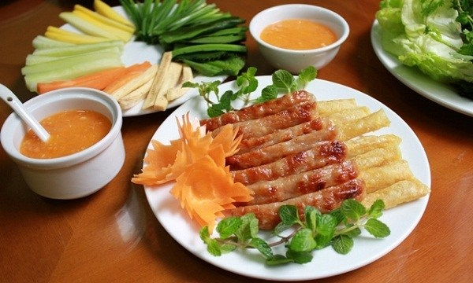 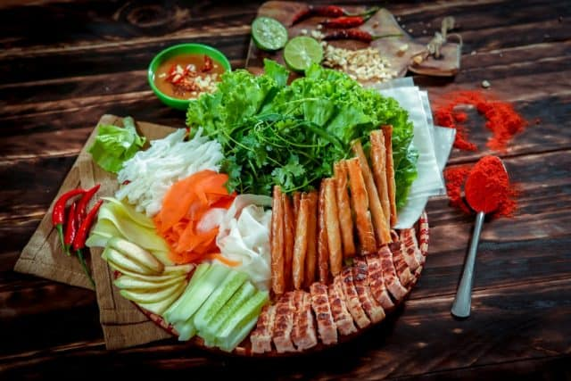Tới Nha Trang, để thưởng thức đúng chất nhất của nem nướng thì du khách có thể tham khảo quán ăn ngon Vũ Thành An, tại số 5, trên đường Lê Lợi, là một trong những quán ăn ngon tại Nha Trang. Nem nướng Nha Trang thường sẽ ăn kèm hơn 10 loại rau củ đủ vị cay, chua, đắng, chát và nước chấm với hương vị từ bí quyết riêng của quán.
Quán ốc Xuân Anh - Địa điểm ăn uống Nha Trang được nhiều người lựa chọn
Địa chỉ: 9C, Tháp Bà, Phường Vĩnh Thọ, Thành phố Nha Trang, Khánh Hòa
Địa điểm ăn uống Nha Trang đầu tiên mà bạn không thể không ghé qua khi đi đến Nha Trang đó chính là quán ốc Xuân Anh. Đây là một trong những địa điểm ăn vặt Nha Trang giá rẻ được nhiều người ưa chuộng.
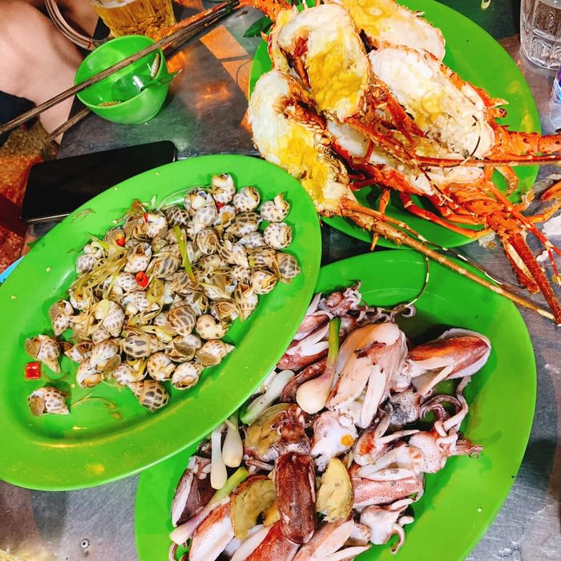 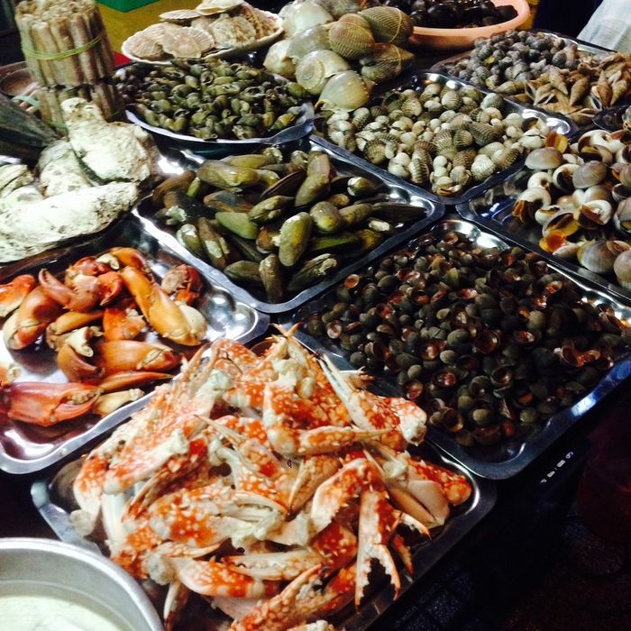Các món ăn ở nơi đây luôn được chế biến tươi sống với công thức độc đáo của bà chủ. Tất cả đã tạo nên những món ăn hấp dẫn và thơm ngon nhất. Đặc biệt, nơi đây thu hút được đông đảo du khách cũng bởi giá thành hợp lý và không gian sạch sẽ và thoáng mát. Khi đến với thành phố Nha Trang bạn chớ quên ghé ngay địa chỉ này nha.
Bò nướng 05 Quý Nha Trang
Địa chỉ: Hương lộ 45 P. Ngọc Hiệp, Thành phố. Nha Trang, Khánh Hòa
Một trong những quán ăn truyền thuyết được chế biến từ bò mà bạn nên biết đó chính là Bò nướng 05 Qúy. Món ăn này đã khiến bất cứ tín đồ nào cũng phải sốt sắng. Thịt bò được chế biến thành nhiều món ăn khác nhau và dễ gây nghiện với nhiều người.
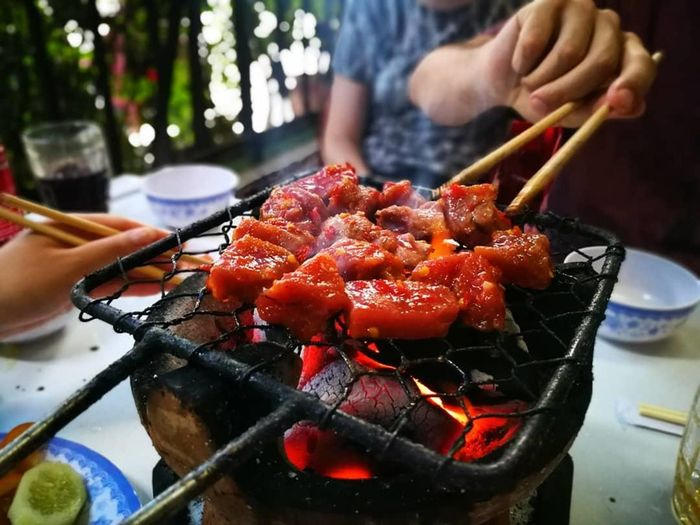 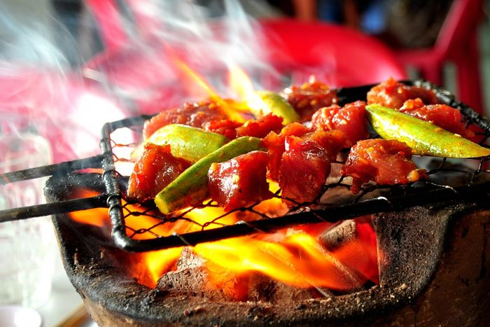Món ăn nào cũng mang đến hương vị đặc trưng nhất. Cũng bởi thế nên cửa hàng lúc nào cũng đông khách. Mức giá của quán khá hợp lý, phù hợp với mọi đối tượng khách hàng khác nhau. Hãy nhanh chân đến với địa chỉ này để được thưởng thức các món ăn ngon và hấp dẫn nhất
Bún chả cá và bún sứa quán bà Năm Beo ngon đúng điệu
Món ngon Nha Trang du khách không thể không thưởng thức khi đến đây chính là bún cá và bún sứa đặc trưng hương vị Nha Trang. Tại Nha Trang cũng có nhiều quán ăn ngon phục vụ hai món ăn nổi tiếng này, tuy nhiên, được biết đến nhiều nhất là địa chỉ quán bà Năm Beo gần khu chung cư Phan Bội Châu với món ngon đậm đà mà giá cả thì không thể hợp lý hơn.
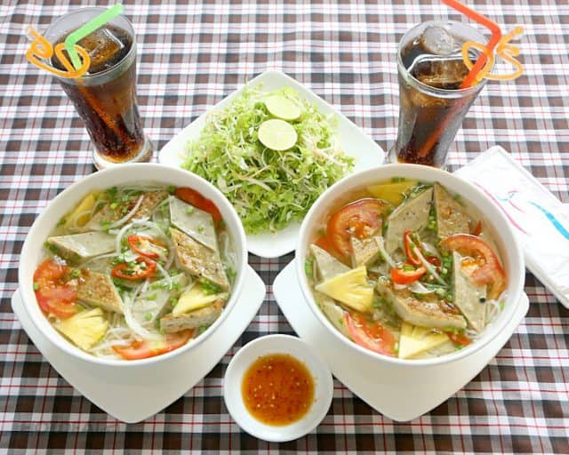 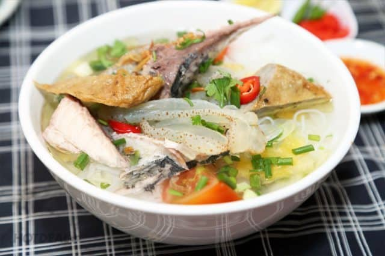Tiếng lành đồn xa, món ngon cứ thế mà vang danh, quán bà ngày nào cũng tấp nập thực khách đến thưởng thức món ăn đặc biệt này. Ngoài 2 món trên, quán còn nhiều món ngon khác như bánh căn, bánh bèo Nha Trang.
Hải sản đường Phạm Văn Đồng - món ngon giá rẻ hấp dẫn
Phạm Văn Đồng là một đường nhỏ xinh đẹp nằm cong cong ôm lấy phố biển Nha Trang xinh đẹp. Con đường này xuất hiện rất nhiều quán hải sản thơm ngon, nơi mà bạn có thể thưởng thức các món hải sản và ngắm cảnh biển. Dưới đây là một số quán ngon Nha Trang trên đường Phạm Văn Đồng mà bạn nên ghé thăm:
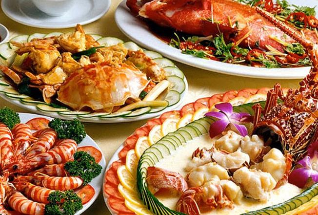 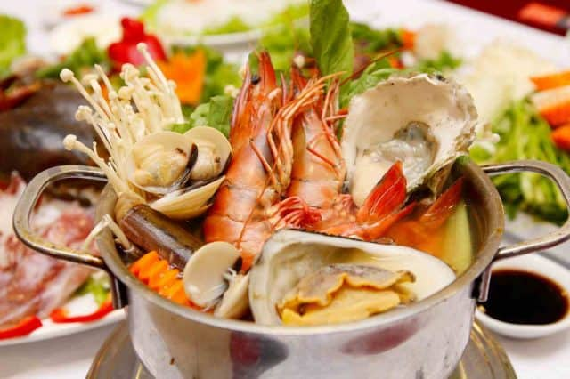Quán Làng Biển được lòng nhiều du khách không chỉ bởi món ăn ngon mà còn bởi mức giá hợp lý. Chỉ từ 30.000 – 200.000 đồng, bạn có thể thưởng các món ngon như: tôm nướng, ghẹ hấp, gỏi hải sản…
Nhà hàng Thùy Dương nằm cách cầu Trần Phú khoảng chừng 500m. Khi đến đây, thực khách được thưởng thức những món hải sản thơm ngon với cách chế biến công phu, tinh tế, khéo léo. Ngoài ra, từ nhà hàng, bạn có thể thưởng ngoạn toàn vịnh Nha Trang xinh đẹp.
Với vị trí đẹp sát biển, các món ăn ngon, giá rẻ, các quán hải sản đường Phạm Văn Đồng sẽ mang đến cho bạn những trải nghiệm tuyệt vời tại Nha Trang.